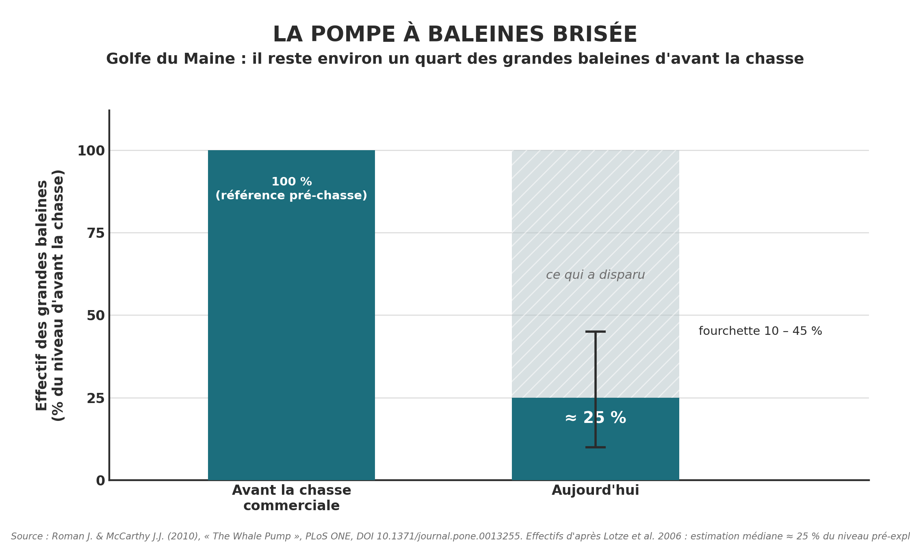
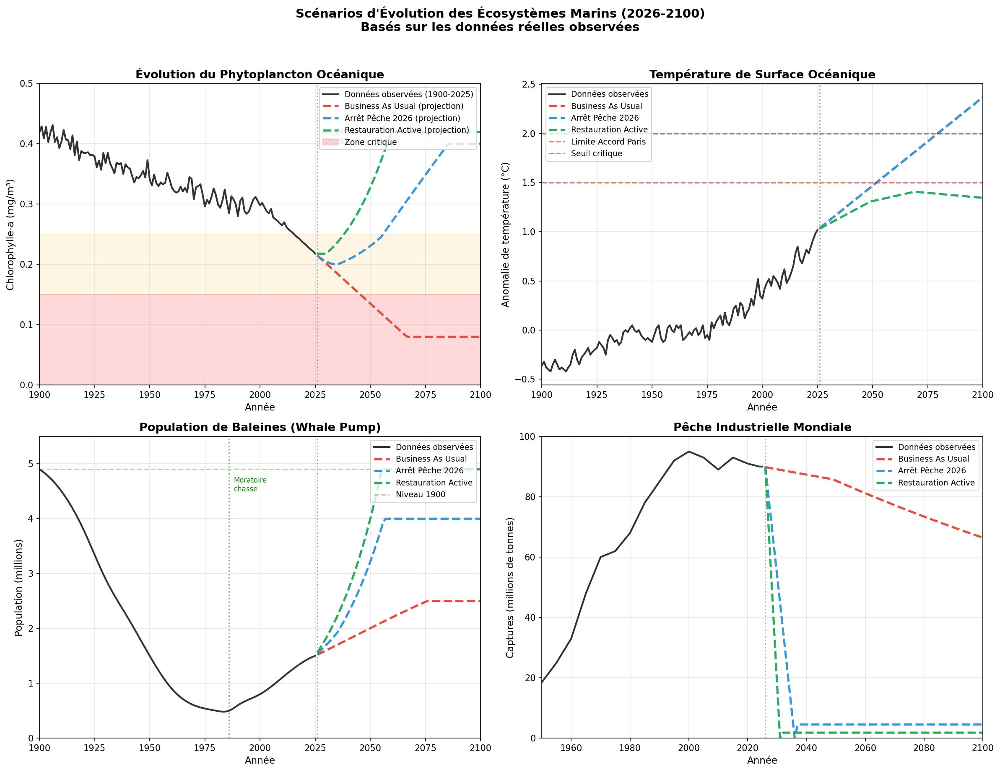
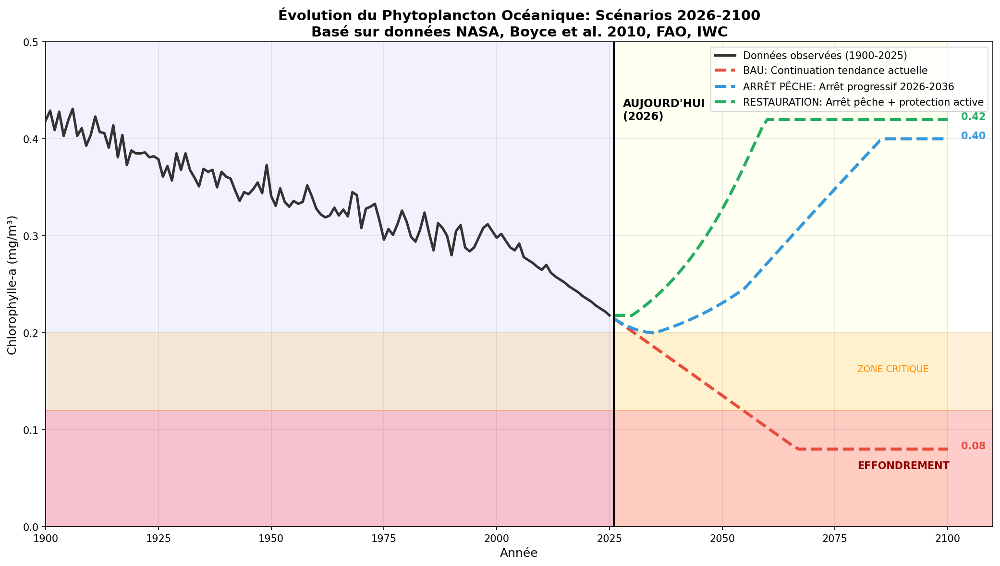

Données et projections 2026-2100
Janvier 2026

Une baleine plonge pour se nourrir en profondeur. Puis elle remonte respirer et relâche en surface d'immenses panaches de déjections, riches en azote.
Or en surface, l'azote est l'engrais du phytoplancton : ces micro-algues invisibles qui sont la base de toute la vie marine, et qui produisent une bonne part de l'oxygène que nous respirons.
Autrement dit, les grands mammifères marins font remonter la fertilité des profondeurs vers la lumière. Les chercheurs appellent ça la « pompe à baleines ».
Son ampleur ? Dans le seul golfe du Maine, cette pompe apporte environ 23 000 tonnes d'azote par an à la surface, plus que tous les fleuves de la région réunis (Roman & McCarthy, 2010).
Puis sont venus les baleiniers. En réduisant les grandes baleines à une fraction de ce qu'elles étaient, ils n'ont pas seulement fait disparaître des animaux. Ils ont débranché une pompe qui nourrissait l'océan.
Le phytoplancton est à la base de toute la vie marine. Ces micro-organismes produisent entre 50% et 80% de l'oxygène atmosphérique et constituent le principal puits de carbone océanique.
| Période | Chlorophylle-a | Évolution |
|---|---|---|
| 1900 (référence) | 0.42 mg/m3 | - |
| 2025 (aujourd'hui) | 0.22 mg/m3 | -48% |
| 2100 (si rien ne change) | 0.08 mg/m3 | -81% |
Trois scénarios projettent l'évolution du phytoplancton selon différentes politiques de gestion des océans.

Sources : Boyce et al. (2010), NASA Ocean Color, FAO FishStatJ
Pêche industrielle continue au niveau actuel, réchauffement +2.4C en 2100.
Résultat : Chlorophylle 0.08 mg/m3 (effondrement)
Arrêt progressif sur 10 ans (2026-2036). Récupération des populations de baleines
grâce à l'effet "Whale Pump" (remontée des nutriments).
Résultat : Chlorophylle 0.40 mg/m3 (récupération)
Arrêt pêche + Aires Marines Protégées massives + Réduction émissions CO2 (scénario 1.5C).
Résultat : Chlorophylle 0.42 mg/m3 (retour niveau 1900)

Focus sur l'indicateur chlorophylle-a
Les baleines jouent un rôle crucial dans la fertilisation des océans. En plongeant en profondeur pour se nourrir puis en remontant à la surface pour respirer et déféquer, elles remontent les nutriments essentiels (azote, fer, phosphore) vers les eaux de surface où vit le phytoplancton.
| Année | Population de baleines | Évolution |
|---|---|---|
| 1900 | 4.9 millions | - |
| 1986 (moratoire) | 0.5 million | -90% |
| 2025 | 1.5 million | +200% depuis 1986 |
| Année | Captures mondiales |
|---|---|
| 1950 | 18 millions de tonnes |
| 2000 (pic) | 95 millions de tonnes |
| 2025 | 90 millions de tonnes |
Les projections sont basées sur :